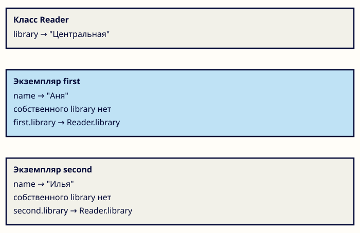
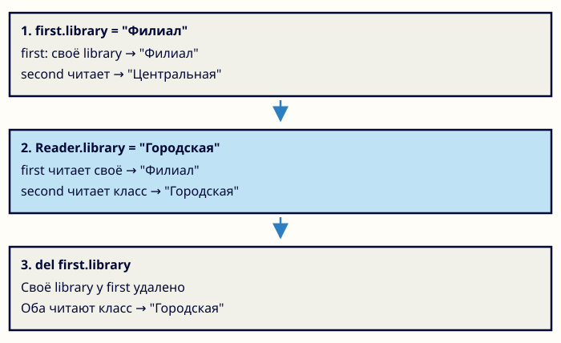
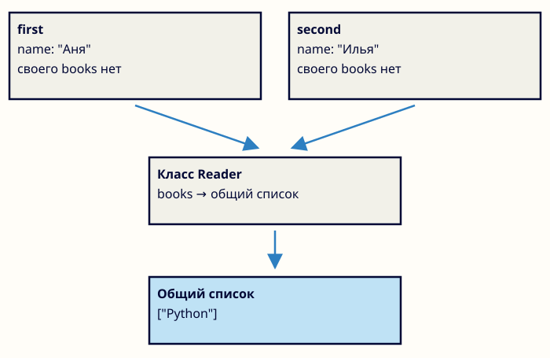
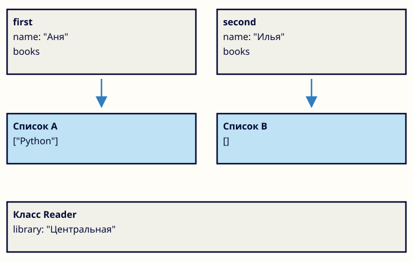
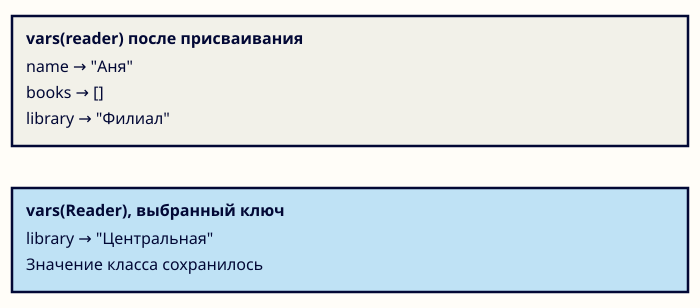
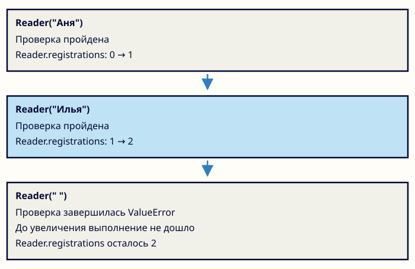

Глава 8.5
Атрибуты класса и экземпляра
В этой главе разобраны места хранения атрибутов, чтение через экземпляр, затенение и общий изменяемый список. Состояния до и после команд показаны на примере читателей.
- Перед началом
- Главы 8.1–8.4; функции, списки и исключения
- После главы
- Размещать общие и личные данные, объяснять затенение и общие ссылки.
- Среда
- Python 3.11 и новее · самостоятельные примеры
- Основа
- Модуль 8 исходного справочника · с. 547
§1 Где хранятся атрибуты
В библиотеке имя читателя относится к одному билету. Название библиотеки может быть общим для всех билетов. В программе эти данные разместим в разных местах: имя — в экземпляре, название — в классе.
class Reader:
library = "Центральная"
def __init__(self, name):
self.name = name
first = Reader("Аня")
second = Reader("Илья")
print(Reader.library)
print(first.name, first.library)
print(second.name, second.library)Центральная Аня Центральная Илья Центральная
Атрибут класса library присвоен в теле класса. Атрибут экземпляра name присвоен через self при инициализации. Оба читателя получают название при обращении через точку, хотя собственного поля library у них пока нет.
На схеме разделены места хранения данных и пути чтения названия.

Поля обозначают разные объекты. library хранится в классе. Стрелки показывают, откуда читается значение.
У first и second разные имена. Название библиотеки читается из одного места — класса Reader. Для обычных атрибутов этого класса сначала проверяются данные экземпляра. Если нужного имени там нет, поиск продолжается в классе.
По-простому: общая вывеска и личный билет
Название библиотеки на общей вывеске относится ко всем читателям. Имя на билете относится к одному человеку.
Что есть что. Вывеска соответствует Reader.library; имя на билете — first.name или second.name. Чтение через экземпляр может обратиться к данным класса.
Если одному читателю нужно особое значение, одноимённый атрибут можно записать в его экземпляр. Тогда путь чтения изменится.
§2 Как работает затенение атрибута класса
У отдельного билета может быть отметка другого филиала. Эта запись относится к одному билету и имеет приоритет перед общим названием. В нашем классе присваивание first.library создаёт собственный атрибут первого экземпляра.
class Reader:
library = "Центральная"
def __init__(self, name):
self.name = name
first = Reader("Аня")
second = Reader("Илья")
first.library = "Филиал"
print(first.library, second.library)
Reader.library = "Городская"
print(first.library, second.library)
del first.library
print(first.library, second.library)Филиал Центральная Филиал Городская Городская Городская
После первого присваивания у first появляется library со значением "Филиал". Это называют затенением: собственный атрибут определяет результат чтения через этот экземпляр. Атрибут класса сохраняется.
Схема связывает каждую строку вывода с отдельным состоянием.

Читаем сверху вниз. В каждом поле показано состояние после соответствующей команды.
Изменение Reader.library затронуло результат чтения у второго читателя. Первый продолжил получать собственное значение. Команда del first.library удалила атрибут экземпляра, после чего чтение снова дошло до класса.
Эти правила описывают обычные атрибуты наших классов. Специальные механизмы доступа к атрибутам могут менять порядок поиска. Для рассматриваемых примеров достаточно различать экземпляр и класс.
По-простому: особая отметка в билете
Личная отметка филиала имеет приоритет для одного билета. После её удаления снова используется общее название библиотеки.
Что есть что. first.library затеняет Reader.library; del удаляет личный атрибут и открывает путь чтения к классу.
Присваивание меняет связь атрибута со значением. Вызов метода изменяемого значения действует иначе: он может изменить общий объект.
§3 Ловушка изменяемого атрибута класса
Один журнал выдачи на всю библиотеку подходит для общего учёта. Если принять этот журнал за личный перечень одного читателя, записи разных людей смешаются. Так происходит, когда личный список книг помещён в класс.
class Reader:
books = []
def __init__(self, name):
self.name = name
first = Reader("Аня")
second = Reader("Илья")
first.books.append("Python")
print(first.books)
print(second.books)
print(first.books is second.books)['Python'] ['Python'] True
При чтении first.books собственного атрибута не находится. Поиск доходит до Reader.books. Затем append меняет найденный список. Присваивания first.books = ... здесь нет, поэтому собственное поле не появляется.
На рисунке два пути чтения сходятся у списка класса. Название Python видно через оба экземпляра.

Верхние поля — экземпляры со своими именами. Две стрелки поиска сходятся у класса. Его books ссылается на голубой прямоугольник общего списка.
Стрелки от читателей сходятся у класса Reader, затем ведут к одному списку. Совпадение содержимого связано с одним общим объектом: это подтверждает is. Для личных выдач такое размещение не подходит. Общая изменяемая коллекция допустима, когда по смыслу нужен общий реестр.
По-простому: общий журнал вместо личных перечней
Запись в общем журнале остаётся общей, кто бы к нему ни обратился. Отдельные билеты сами по себе не создают отдельные журналы.
Что есть что. Reader.books — общий журнал; first.books и second.books находят его через класс; append меняет найденный список.
Для независимых перечней перенесём создание списка в инициализатор каждого читателя.
§4 Как разделить общие настройки и личное состояние
Если каждому билету приложить отдельный лист выдач, запись в одном листе затронет только его владельца. В программе новый список для каждого читателя создаёт self.books = [] внутри __init__.
class Reader:
library = "Центральная"
def __init__(self, name):
self.name = name
self.books = []
first = Reader("Аня")
second = Reader("Илья")
first.books.append("Python")
print(first.books)
print(second.books)
print(first.books is second.books)
print(first.library, second.library)['Python'] [] False Центральная Центральная
Имя и книги хранятся в экземплярах. Название библиотеки остаётся в классе. На схеме видно, какие данные раздельны, а какие читаются из общего места.

Верхние поля — экземпляры. Стрелки от books ведут к двум голубым прямоугольникам списков A и B. Общее library показано отдельно внизу.
Проверка идентичности списков возвращает False. Название библиотеки одинаково для обоих читателей. Выбор места хранения определяется смыслом данных: общая настройка относится к классу, личная история выдач — к экземпляру.
По-простому: общее название и личные перечни
Вывеска библиотеки общая. Листы выдач у читателей отдельные, поэтому записи о книгах не смешиваются.
Что есть что. Reader.library — общая настройка; self.books = [] — отдельный список экземпляра.
Проверить такое размещение можно средствами Python. Для наших классов подойдёт просмотр словарей атрибутов.
§5 Как проверить место хранения атрибута
В учёте полезно различать сведения на билете и сведения в общем справочнике. Для наших объектов vars показывает, какие атрибуты записаны в выбранном месте. Словарь атрибутов связывает имена полей с их значениями.
class Reader:
library = "Центральная"
def __init__(self, name):
self.name = name
self.books = []
reader = Reader("Аня")
print(vars(reader))
print("library" in vars(reader))
print("library" in vars(Reader))
reader.library = "Филиал"
print("library" in vars(reader))
print(Reader.library){'name': 'Аня', 'books': []}
False
True
True
ЦентральнаяПервый вывод содержит только name и books. Проверка через in ищет ключ в словаре выбранного объекта. Поэтому library сначала найден только у класса. После присваивания он появляется и у экземпляра.
На схеме показано содержимое мест хранения после последнего присваивания.

Поля показывают разные словари атрибутов. У класса есть и другие служебные ключи; здесь выделен только library.
Наличие ключа в vars(reader) и чтение reader.library отвечают на разные вопросы. Первое проверяет собственные данные, второе выполняет поиск атрибута. У экземпляров этого класса есть словарь атрибутов, поэтому здесь применим vars. У некоторых других типов такого словаря нет.
По-простому: проверка места записи
Одинаковое название может быть напечатано на вывеске и вписано в один билет. Проверка документа показывает, есть ли личная запись.
Что есть что. vars(reader) показывает собственные атрибуты; reader.library выполняет поиск, который может дойти до класса.
Просмотр словарей помогает проверить место хранения. Общий атрибут также подходит для накопления статистики.
§6 Как изменять общую статистику
Общее число регистраций относится ко всей библиотеке. Его можно хранить в классе, а обновлять после успешной проверки данных нового читателя. В этом примере счётчик увеличивается в конце инициализации.
class Reader:
registrations = 0
def __init__(self, name):
if not name.strip():
raise ValueError("Имя не должно быть пустым")
self.name = name.strip()
self.books = []
Reader.registrations += 1
first = Reader("Аня")
second = Reader("Илья")
print(Reader.registrations)
try:
Reader(" ")
except ValueError:
print("Регистрация отклонена")
print(Reader.registrations)2 Регистрация отклонена 2
Команда Reader.registrations += 1 читает число из класса, увеличивает его и записывает результат обратно в класс. Целое число неизменяемо: создаётся новая связь атрибута с числом. Присваивание self.registrations += 1 для обычных атрибутов этой модели записало бы результат в экземпляр и затенило общее значение.
Покажем состояния счётчика после каждого из трёх вызовов.

Читаем сверху вниз. Во всех полях изменяется один атрибут класса; отклонённая регистрация его не меняет.
Итоговое значение равно 2, как в выводе. Счётчик фиксирует успешные выполнения инициализатора. Число существующих объектов может отличаться от этого счётчика. Удаление читателя оставляет счётчик прежним. Прямой повторный вызов __init__ снова увеличит значение.
По-простому: счётчик оформлений
Каждое завершённое оформление добавляет единицу к общему итогу. Отклонённое заявление до этого действия не доходит.
Что есть что. Reader.registrations хранит общий итог; увеличение в конце __init__ фиксирует успешное выполнение.
Мы разделили личные данные и общую статистику. Внутри методов доступ к личному экземпляру задаётся параметром self.
§7 Частые ошибки
| Ошибка | Что происходит | Как исправить |
|---|---|---|
| Считать все значения через reader личными | Чтение может найти атрибут класса | Проверять место хранения |
| Менять first.library вместо общей настройки | Создаётся собственный атрибут экземпляра | Для общей настройки обращаться к Reader.library |
| Хранить личные книги в books=[] тела класса | Читатели находят один общий список | Создавать self.books в __init__ |
| Принимать append за присваивание атрибута | Метод меняет найденный список | Различать изменение объекта и запись атрибута |
§8 Шпаргалка и термины
- Атрибут класса
- Значение в классе; Reader.library хранит общее название. Пример и схема §1.
- Атрибут экземпляра
- Собственное значение объекта; first.name хранит имя Ани. Пример и схема §1.
- Затенение
- Собственный атрибут определяет результат чтения вместо одноимённого атрибута класса. Пример и схема §2.
- Изменяемый объект
- Объект, содержимое которого может меняться; append изменяет список. Пример и схема §3.
- Общая ссылка
- Два обращения дают один объект; оба books находят список класса. Пример и схема §3.
- Инициализатор
- Метод __init__, в котором здесь создаются личные списки. Пример и схема §4.
- Словарь атрибутов
- Связи имён полей со значениями; vars(reader) показывает собственные поля. Пример и схема §5.
- Общий счётчик
- Атрибут класса registrations фиксирует успешные выполнения инициализатора. Пример и схема §6.
Итог главы
- Обычное чтение может продолжиться от экземпляра к классу.
- Присваивание экземпляру затеняет атрибут класса в показанной модели.
- Изменение общего списка видно через все ссылки на него.
- Личную коллекцию создают отдельно для каждого экземпляра.